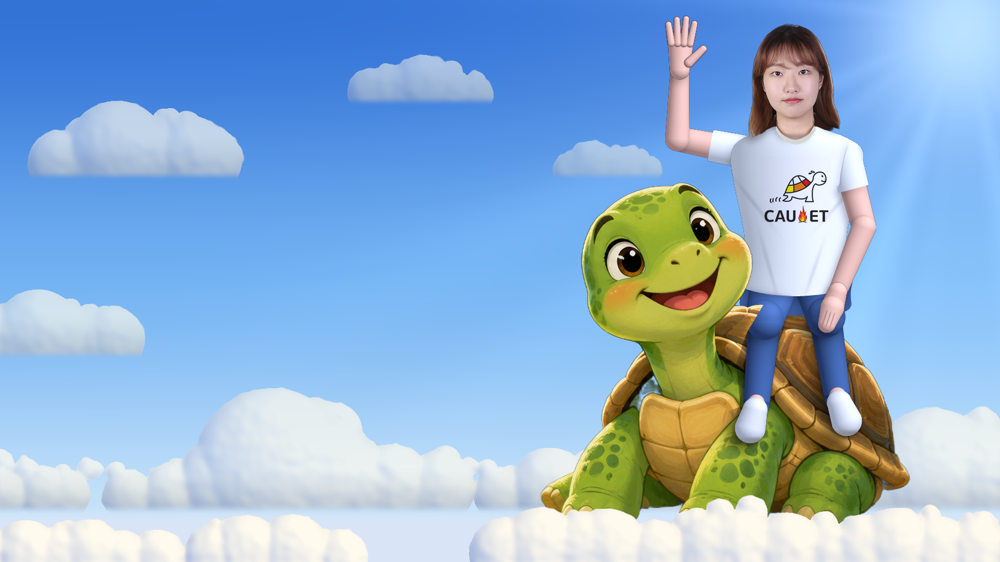
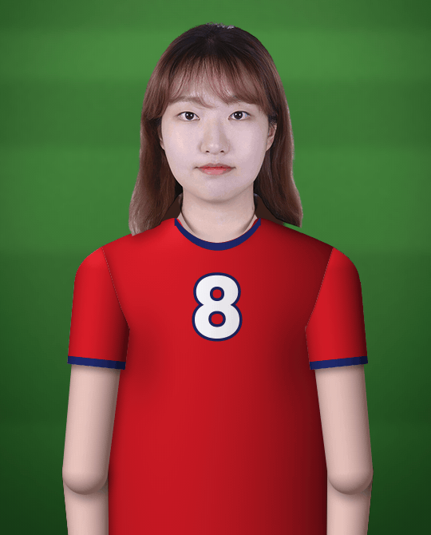

Current재학 중
M.S. Student
Chung-Ang University
Department of Statistics and Data Science

HELLO, I’M안녕하세요,
An M.S. student
working with data.데이터를 연구하는
석사과정 연구자입니다.
Chung-Ang University · Statistics & Data Science통계데이터사이언스학과

01 / A LITTLE INTRODUCTION01 / 자기소개
Hello, I’m Chaerin Song, an M.S. student in the Statistics and Data Science at Chung-Ang University.
My work focuses on machine learning for biomedical data and speech-based health assessment. I’m also interested in understanding how models represent and use information.
안녕하세요. 중앙대학교 통계데이터사이언스학과 석사과정에 재학 중인 송채린입니다.
의생물학 데이터와 음성 기반 건강 평가 문제에 머신러닝을 적용하고 있습니다. 모델이 정보를 어떻게 표현하고 활용하는지에도 관심이 있습니다.
Publications출판 논문2025 – 2026
SAND Challenge2025 · Task 2 · Team CAU
Statistics &
Data Science통계데이터
사이언스Chung-Ang University중앙대학교
Current재학 중
Chung-Ang University
Department of Statistics and Data Science
2025
Speech Analysis for Neurodegenerative Diseases Challenge · Team CAUSpeech Analysis for Neurodegenerative Diseases Challenge · CAU 팀
Follow-up ALS severity prediction · Avg. F1-score 0.5437 · ICASSP 2026 Grand Challenge (held in 2025)추적 시점 ALS 중증도 예측 · 평균 F1-score 0.5437 · ICASSP 2026 Grand Challenge (2025년 개최)
Official leaderboard공식 순위표 ↗03 / SELECTED WORK03 / 연구 및 작업
Machine learning for speech and biomedical data.음성과 의생물학 데이터를 다루는
머신러닝 연구입니다.
A study of hybrid speech features combining pretrained Whisper embeddings with acoustic features to estimate ALS severity.Whisper 임베딩과 음향 특징을 결합해 ALS 중증도를 예측하는 연구입니다.
A benchmark comparing tree-based machine learning and deep learning models across five biomedical tabular datasets.5개의 의생물학 표 형식 데이터셋에서 트리 기반 머신러닝과 딥러닝 모델을 비교했습니다.
A place to collect my publications, projects, and research interests in one page.논문과 프로젝트, 관심 있는 연구 주제를 한곳에 정리하는 홈페이지입니다.
04 / GET IN TOUCH04 / 연락처
For questions about my work, research, or projects, you can find me here.연구나 프로젝트에 관한 이야기는
아래 채널로 연락해 주세요.